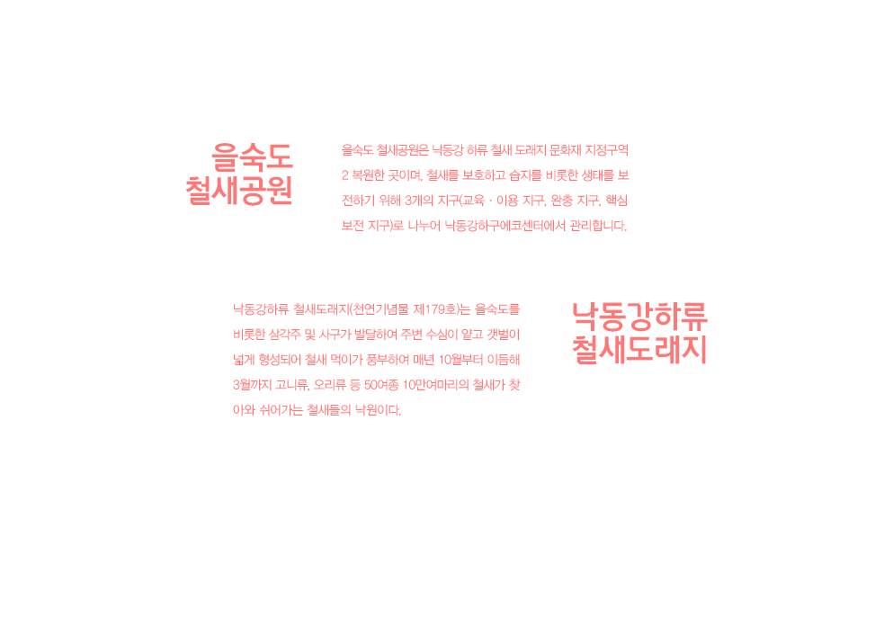

을숙도
철새도래지

다 읽었어요
김해국제공항 > (택시)20분소요
지하철 : 지하철 1호선(신평 방면)노포역 > 하단역 3번 출구 - 20분 소요
환승버스 : 시내버스(58, 58-1, 58-2),마을버스(강서구 1~20번) 이용 1구간
지나'을숙도 휴게소'정류장 하차
지하철 : 지하철 2호선(장산 방면) 사상역 > 서면역(1호선 신평방면 환승)
> 하단역 3번출구 - 20분 소요
환승버스 : 시내버스(58,58-1,58-2),마을버스(강서구 1~20번)이용 1구간
지나'을숙도 휴게소'정류장 하차
부산역(동구 초량동) > 지하철 > 버스환승
지하철 : 지하철 1호선(신평 방면)부산역 > 하단역 3번
출구 - 20분 소요
환승버스 : 시내버스(58,58-1,58-2), 마을버스(강서구
1~20번)1구간 지나'을숙도 휴게소'정류장 하차
지하철 : 지하철 1호선 하단역 3번 출구 버스 환승
시내버스(58,58-1,58-2),마을버스(강서구 1~20번)
이용 1구간 지나'을숙도 휴게소'정류장 하차,나무육교
건너서 도보 5분
양산 IC 근처에서 남양산 방향(김해 창원 방향)으로 진입
> 대저 IC에서 일반 도로 진입
> 김해공항 방향 (김해공항 입구를 통과)
> 명지 IC(대저 IC에서 3km 거리) 에서 하단 방향
> 을숙도 문화회관 앞에서 우회전하여 에코센터 진입
냉정 IC에서 남부 지선 진입(우회전)
> 서 부산 톨게이트
> 서 부산 IC
> 진해 녹산 방향
> 명지 IC(서 부산 IC에서 6km 거리)에서 하단 방향
> 을숙도 문화회관 앞에서 우회전하여 에코센터 진입
명지 IC에서 하단 방향
> 을숙도 문화회관 앞에서 우회전하여 에코센터 진입(명지 IC에서 1.3km)
낙동강 하구둑
> 을숙도 문화회관 앞에서 우회전하여, 물문화회관(수자원공사) 건물 주위로 돌아서
(우회전 추가로 2번) 큰 도로 건너편으로 나와서 왼쪽편